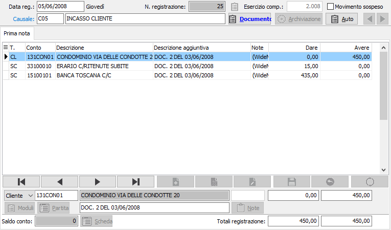
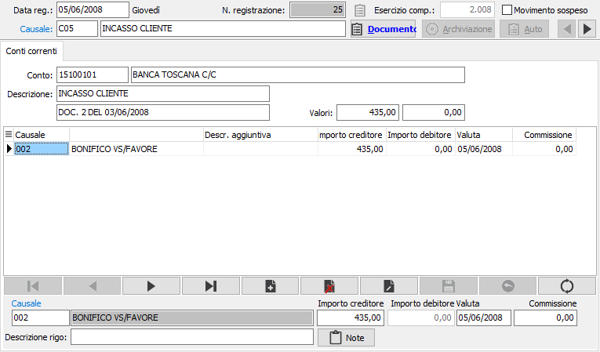

Introduzione
La procedura permette di gestire i rapporti di conto corrente con le proprie banche, è quindi possibile registrare in maniera analitica tutte le operazioni intercorse con la propria banca al fine di tenere costantemente sotto controllo la situazione del proprio estratto conto.
Per ciascun istituto di credito è possibile definire le causali operazioni da utilizzare per la movimentazione, le date di valuta che la banca applica (chiaramente per data di validità) e tutte le condizioni che regolano il conto (tipo di applicazione delle spese, importo spese, eccetera).
Ad ogni c/c viene attribuito un conto contabile e quindi durante la registrazione dei normali movimenti di prima nota, al momento in cui viene selezionato un conto contabile memorizzato all’interno della tabella “Condizioni operazioni c/c”, viene attivata una ulteriore finestra in cui l’operatore può inserire le informazioni fondamentali ai fini della movimentazione c/c (importo, data valuta, eventuale commissioni).
I movimenti registrati direttamente da prima possono comunque essere integrati e/o modificati anche attraverso l’apposito programma di manutenzione movimenti.
E’ possibile in qualsiasi momento stampare l’estratto conto (ordinabile sia per data movimento che per data valuta) e lo scalare interessi con il calcolo delle competenze del periodo, in modo da poterlo raffrontare con quello inviato dalla banca.
Avviamento
Per attivare la procedura di Gestione conti correnti, l'utente dovrà controllare e predisporre una serie di tabelle secondo una precisa sequenza operativa. La corretta esecuzione di tali operazioni è condizione imprescindibile per non incontrare difficoltà durante l'uso dei programmi della procedura. La sequenza prevede:
Controllo e completamento della tabella Configurazione conti correnti
Caricamento della tabella Banche
Caricamento della tabella Valute
Caricamento della tabella Condizioni operazioni c/c
Controllo e completamento della tabella Festività
Operazioni contabili sui conti correnti
Le registrazioni inerenti i conti correnti sono contestuali alle correlative registrazioni contabili. In tale occasione, la presenza del conto corrente bancario nella tabella condizioni operazioni c/c attiva il richiamo della procedura conti correnti.
Vediamo un esempio di registrazione di un incasso fattura da cliente con movimentazione della banca.

Non appena inserito il conto della banca e confermato l'importo, si apre automaticamente la finestra video Conti correnti che richiede l’indicazione della causale, del''importo e della valuta, se non inserita in precedenza.

CAUSALE: indicare il codice della causale relativa al movimento che si vuole trattare. Sul campo è attiva la ricerca F9 sulla relativa tabella.
DESCRIZIONE RIGO: descrizione aggiuntiva per il movimento. Tramite il pulsante Note è possibile inserire delle ulteriori annotazioni.
IMPORTI: inserire l'importo del movimento.
VALUTA: viene riportata in automatico se presenti condizioni che ne consentano una determinazione.
COMMISSIONI: viene riportato in automatico l'importo delle commissioni, se presenti condizioni che ne consentano una determinazione.
A conferma del movimento o dei movimenti, premendo pagina giù il programma ritorna alla finestra video prima nota. All’atto della conferma della registrazione contabile, il programma registra anche il movimento nella tabella movimenti conti correnti.